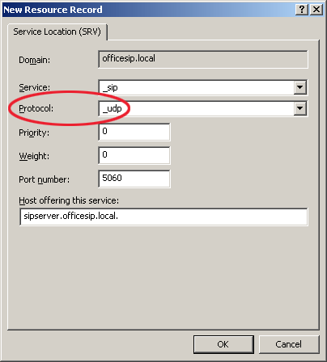

Configure DNS server
How to configure DNS server for OfficeSIP Server and Messenger.
The OfficeSIP Server does not require DNS server. But DNS server helps clients to find SIP server by domain name in SIP URI (user@domain.name). You do not need to specify server address on each client if you have propertly configured DNS server.
An example of part DNS implementation for SIP proxy servers might look like this:
; sipserver.officesip.local. 43200 IN A 192.168.1.1 ; _sip._udp.officesip.local. 43200 IN SRV 10 10 5060 sipserver.officesip.local. _sip._tcp.officesip.local. 43200 IN SRV 10 10 5060 sipserver.officesip.local. ; officesip.local. IN NAPTR 0 0 "s" "SIP+D2T" "" _sip._tcp.officesip.local. officesip.local. IN NAPTR 1 0 "s" "SIP+D2U" "" _sip._udp.officesip.local.
Fortunatelly, Windows Server 2003/2008 has the DNS server software.
Here is tutorial for configuration DNS server on Windows Server 2003:
1. Start DNS mananagent panel from Manage Your Server panel or from Start menu -> All Programs -> Administartive Tools -> DNS.
2. Add A record with server IP.

3. Add two SRV records.
3.1 First for TCP protocol, 5060 is default port number for SIP server.
3.2 Second for UDP protocol.
